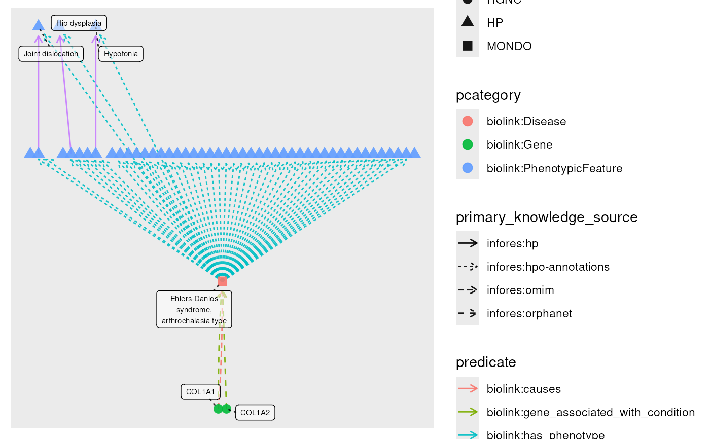

Specialized plot() function for KGX graphs
# S3 method for class 'tbl_kgx'
plot(
g,
...,
layout = "auto",
node_color = pcategory,
node_shape = namespace,
edge_color = predicate,
edge_linetype = primary_knowledge_source,
node_label = name,
plot_ids = FALSE,
label_size = 2,
fan_strength = 2,
edge_alpha = 0.9,
node_alpha = 0.9
)A tbl_kgx graph.
Arguments passed on to ggraph::ggraph
graphThe object containing the graph. See Details for a list
of supported classes. Or a layout_ggraph object as returned from
create_layout in which case all subsequent arguments is ignored.
The layout to use for the plot. Default is "auto" as used by ggraph.
The column to use for node color. Default is "pcategory".
The column to use for node shape Default is "namespace".
The column to use for edge color. Default is "predicate".
The column to use for edge line type. Default is "primary_knowledge_source".
The column to use for node labels. Defaults to "name".
Whether to show node IDs in node labels. Defaults to FALSE.
Size of node label text. Default is 2.
Fan strength in ggraph's geom_edge_fan, Default is 2.
Alpha value for edges, default 0.9.
Alpha value for nodes, default 0.9.
data(eds_marfan_kg)
g <- eds_marfan_kg |>
fetch_nodes(query_ids = "MONDO:0007525") |>
expand(predicates = "biolink:has_phenotype",
categories = "biolink:PhenotypicFeature")|>
expand(categories = "biolink:Gene")
plot(g)
#> Using "sugiyama" as default layout
#> Warning: ggrepel: 45 unlabeled data points (too many overlaps). Consider increasing max.overlaps
